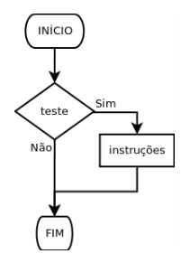
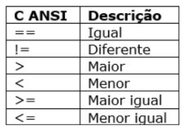

Introdução
As estruturas condicionais permitem que seu programa tome decisões com base em condições. As principais são if, if-else e switch. Além disso, temos estruturas de repetição, como while, do e for, que permitem executar blocos de código várias vezes, apresentada na próxima seção.
Estrutura If
A estrutura if verifica se uma condição é verdadeira e, caso seja, executa um bloco de código. Caso contrário, esse bloco é ignorado.
O comando consiste na palavra-chave if seguida de uma expressão de teste entre parênteses. Se a expressão de teste (condição) for verdadeira, a instrução será executada; do contrário, nada será feito. Exemplo:
#include <stdio.h>
int main() {
int idade = 18;
if (idade >= 18) {
printf("Voce e maior de idade.");
}
getchar();
return 0;
}
Operadores relacionais funcionam como os símbolos matemáticos e são muitos úteis para as expressões de teste. No exemplo passado, o operador maior igual (>=) foi utilizado. A seguir há um quadro contendo a esquerda os caracteres para utilizar e a direita o que representa:
Há também os operadores lógicos de valores booleanos (verdadeira/falso) que são importantes na definição de condições:
E - &&;
OU - ||;
NÃO - !;
Estrutura If-Else
O if-else adiciona uma alternativa. Se a condição no if não for verdadeira, o bloco de código no else será executado.
#include <stdio.h>
int main() {
int idade = 16;
if (idade >= 18) {
printf("Você é maior de idade.");
} else {
printf("Você é menor de idade.");
}
getchar();
return 0;
}
Além do if e do else, há também o else if. O else if é utilizado para adicionar mais um teste de condição além do if
#include <stdio.h>
int main(void){
int numero=10;
if(numero>7){
printf("O numero e menor que 5.\n");
} else if(numero<12){
printf("O numero e maior ou igual a 7 e menor que 12.\n");
} else{
printf("O numero e maior ou igual a 12.\n”);
return 0;
}
Exemplo utilizando operador booleano &&:
Escreva um programa que peça ao usuário para inserir três números inteiros. O programa deve verificar se todos os três números são positivos. Se forem, o programa deve imprimir "Todos os numeros sao positivos". Caso contrário, deve imprimir "Pelo menos um numero e negativo ou zero".
#include <stdio.h>
int main(void) {
int num1, num2, num3;
printf("Digite o primeiro numero: ");
scanf("%i", &num1);
printf("Digite o segundo numero: ");
scanf("%i", &num2);
printf("Digite o terceiro numero: ");
scanf("%i", &num3);
fflush(stdin);
// Condicional utilizando o operador &&
if (num1 > 0 && num2 > 0 && num3 > 0) {
printf("\nTodos os numeros sao positivos.");
} else {
printf("\nPelo menos um numero e negativo ou zero.");
}
getchar();
return 0;
}
Vídeo sobre o comando if
Estrutura Switch
A estrutura switch permite testar uma variável contra várias condições, executando blocos de código diferentes com base no valor da variável.
#include <stdio.h>
int main() {
int dia = 3;
switch(dia) {
case 1:
printf("Domingo");
break;
case 2:
printf("Segunda-feira");
break;
case 3:
printf("Terça-feira");
break;
default:
printf("Dia inválido");
}
getchar();
return 0;
}
Quando os casos forem caracteres de letras é necessário colocá-los entre aspas simples (‘’).
Exemplo prático: Faça um programa que verifique se uma letra digitada é vogal ou consoante. Se digitar outro caractere (número ou símbolo) informe “A entrada é inválida”
#include <stdio.h>
int main(void) {
char letra;
printf("Digite uma letra: ");
scanf("%c", &letra);
fflush(stdin);
switch (letra) {
case 'A': case 'E': case 'I': case 'O': case 'U': //entrada de letra maiuscula
case 'a': case 'e': case 'i': case 'o': case 'u': //entrada de letra minuscula
printf("\n%c e uma letra vogal",letra); //saida para todos os casos citados
break;
default:
switch (letra) {
case 'B'...'Z': //reticencias para considerar todas as letras no meio
case 'b'...'z':
printf("\n%c e uma letra consoante",letra);
break;
default:
printf("\nErro: %c nao e uma letra",letra);
break;
}
break;
}
getchar();
return 0;
}
Vídeo sobre o comando switch:
Exercícios
Na página inicial há a aba de atividades que também pode ser acessada.
Pratique o uso de estruturas condicionais if if-else e switch com os exercícios a seguir:
1. Verifique se um número é par ou ímpar:
#include <stdio.h>
int main() {
int numero;
printf("Digite um numero: ");
scanf("%d", &numero);
fflush(stdin);
if (numero % 2 == 0) {
printf("O numero e par.");
} else {
printf("O numero e impar.");
}
getchar();
return 0;
}
2. Crie um programa que verifica o dia da semana com switch:
#include <stdio.h>
int main() {
int dia;
printf("Digite um numero (1-7) para o dia da semana: ");
scanf("%d", &dia);
fflsuh(stdin);
switch(dia) {
case 1:
printf("Domingo");
break;
case 2:
printf("Segunda-feira");
break;
case 3:
printf("Terca-feira");
break;
case 4:
printf("Quarta-feira");
break;
case 5:
printf("Quinta-feira");
break;
case 6:
printf("Sexta-feira");
break;
case 7:
printf("Sabado");
break;
default:
printf("Dia invalido");
}
getchar();
return 0;
}
3. Faça um programa que peça dois números e imprima o maior deles:
#include <stdio.h>
int main (void){
float n1,n2;
printf("Digite um numero: ");
scanf("%f",&n1);
printf("\nDigite outro numero: ");
scanf("%f",&n2);
fflush(stdin);
if (n1>n2){
printf("\nO numero %f e maior que o numero %f.",n1,n2);
}
else{
printf("\nO numero %f e maior que o numero %f.",n2,n1);
}
getchar();
return 0;
}
4. Faça um programa que peça quatro notas de um aluno e calcule a média. Analisar a média e imprimir uma das mensagens a seguir:
a) A mensagem "Aprovado", se a média for maior ou igual a 7, com a respectiva média alcançada;
b) A mensagem "Reprovado", se a média for menor do que 7, com a respectiva média alcançada;
c) A mensagem "Nota 10, continue assim!", se a média for igual a 10.
#include <stdio.h>
int main(void) {
float n1, n2, n3, n4, media;
printf("Digite a primeira nota: ");
scanf("%f", &n1);
printf("Digite a segunda nota: ");
scanf("%f", &n2);
printf("Digite a terceira nota: ");
scanf("%f", &n3);
printf("Digite a quarta nota: ");
scanf("%f", &n4);
fflush(stdin);
media=(n1+n2+n3+n4)/4;
if (media>=9.5) { //>=9.5 arredonda para 10
printf("Nota 10, continue assim!");
} else if (media>=6.5) { //>=6.5 arredonda para 7
printf("Aprovado! Media: %.f", media);
} else {
printf("Reprovado! Media: %.f", media);
}
getchar();
return 0;
}